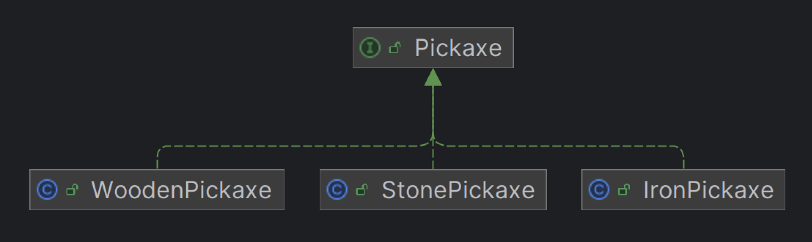

모듈Module이란 Smoodi에서 인지하고 있는, 구체적으론 IoC 컨테이너 에 등록되어 있는 객체를 말합니다. 이 모듈에 대한 Smoodi의 다양한 기능을 알아봅시다.
객체가 생성되고 파괴될 때까지를 객체 생명주기Lifecycle라고 부릅니다. 이 생명주기를 사용자가 관리하는 게 아닌, Smoodi의 IoC 컨테이너가 대신 관리해주는 객체를 말합니다.
이 방식을 IoC, 제어의 역전Inversion of Control이라고 부릅니다.
IoC에 대한 더 자세한 내용은 이 글을 참고하세요.
사용자는 그저 클래스를 정의하고 어노테이션을 부착하면, Smoodi가 자동으로 모듈로 등록합니다. 이 작업은 모듈 로더ModuleLoader에 의해 일어납니다. 바로 아래 절에서 어노테이션에 대해 설명합니다.
모듈은 아래와 같은 세 가지 가정에 기초합니다. 또한 특징이기도 합니다.
모듈의 상태(필드 등)는 변하지 않습니다. 이는 의존성(다른 모듈 객체)을 담은 변수 또한 마찬가지입니다. 모든 모듈은 불변이므로, 각 모듈의 동작은 외부의 요소(무작위 값, 현재 시간 등)가 개입되지 않는 한 일관적이어야 합니다.
다른 모듈과의 메시징 과정이나 이력을 저장하지 않습니다. 또한 메시징이 다른 메시징에 영향을 끼치지도 않습니다. 원자성의 특징 또한 포함합니다.
모듈의 구성엔
Smoodi는 위의 세 가지 가정이 참일 것이라 믿고 동작을 수행하며, 반대로 사용자에게도 이 원칙 하에 모듈을 제어합니다.
이러한 가정과 서로에 대한 신뢰는 Smoodi가 추구하는 메시징Messaging의 주요 원칙이기도 합니다.
Smoodi는 서로가 서로의 역할을 다할 것이라는 믿음 하에 이루어지는 것이 메시징이라고 정의합니다.
Smoodi-Core 프레임워크는 모듈과 관련된 다양한 기능을 제공하며, 이에 따른 구분이 존재합니다.
Primary Module기본 모듈이란, 단일 타입에 여러 하위 모듈이 존재할 때, 단일 모듈을 요구하는 경우 그 대상으로 지정되는 모듈을 의미합니다.
살짝 어려운 개념입니다. 예시와 함께 봅시다.
만약 나무 곡괭이, 돌 곡괭이, 철 곡괭이, 이렇게 세 개의 도구가 존재한다고 해보겠습니다. 이 때 무언갈 채광하기 위해 세 도구 중 하나를 선택해야 한다면, 효율을 고려했을 때 아마 철 곡괭이가 가장 좋은 선택일 것입니다.
위와 같이, 여러 개의 모듈이 제공되긴 하지만 기본적으로 사용할 모듈을 지정할 때 이 기능을 사용할 수 있습니다.
여기에선 인터페이스인
또한 프록시 객체Proxy Object, 컴포지트 패턴Composite Pattern처럼 원본 대신 제공될 모듈을 지정할 때에도 이 기능을 활용할 수 있겠습니다.
모듈은 하나의 타입 안에서도 여러 개의 모듈이 존재할 수 있습니다. 위에서 언급한 예시인, 곡괭이 타입의 나무곡괭이, 돌곡괭이처럼 말입니다.
이 모듈들은 IoC 컨테이너 내부에서 배열로 저장됩니다. 불러올 때에도 배열로 불러올 수 있습니다. 그리고 이 때 사용되는 기능이 모듈의 Order순서 지정입니다.
이 기능은
어노테이션 매개변수에 대한 더 자세한 내용은 이 절을 참고하세요.
public interface ModuleContainer {
@NotNull
<T> Set<T> getModulesByClass(@NotNull Class<T> klass);
}
IoC 컨테이너 개념의 구체적인 인터페이스인
매개값으로 주어진 타입에 대입 가능한 모든 모듈을 불러옵니다.
Static Module이란, ModuleLoader에 의해 생성 및 로드되지는 않으나, IoC 컨테이너에 등록할 이유가 있어 정적인 방법으로 수동 등록된 모듈입니다. 아마 일반적인 사용자는 이 형태의 모듈을 정의할 상황이 거의 없을 것입니다.
Smoodi-Core의 일부 모듈 중에, IoC 컨테이너 로드 이전에 생성되고, 이후에도 계속 사용되는 모듈들이 이에 속합니다. 대표적인 예시가 IoC 컨테이너 자신과,
프레임워크 생명주기인
모든 모듈은 IoC 컨테이너에 등록되기 위해선
@Target({ElementType.TYPE, ElementType.ANNOTATION_TYPE})
@Retention(RetentionPolicy.RUNTIME)
@Documented
public @interface Module { /* ... */ }
클래스Class에만 부착할 수 있으며, 모듈로써 등록함을 의미합니다.
이 어노테이션을 부착한 모든 타입클래스은 자동으로 인스턴스화객체 생성되고, IoC 컨테이너에 저장됩니다. 이 과정은 아래에서 언급할 ModuleLoader에 의해 이루어집니다.
세 가지의 매개변수가 존재하며, 대부분의 경우는 기본 설정으로도 적합합니다.
모듈의 생성자에 등록된 모든 매개변수의 타입, 즉 의존하는 타입은 이 어노테이션이 부착되어 있어야만 합니다. 인터페이스interface나 추상 클래스abstract class를 참조하는 경우는 괜찮습니다.
이는 모듈이 아닌 것들ex -
모듈은 인스턴스화 시점에서 IoC 컨테이너에 의해 생성자를 통하여 의존성을 주입Dependency Injection받습니다. 그러므로 모든 의존성은 IoC 컨테이너에 등록된 인스턴스가 있는, 즉 모듈이어야 합니다. 그렇지 않다면 모듈을 인스턴스화할 수 없습니다.
위의 이유로, Smoodi에는 의존성이 모듈이 아닌 경우를 탐색하는 알고리즘이 존재합니다.
가장 기본적으로, 인스턴스화 가능한 타입ex -
인스턴스화 불가능한 타입ex -
boolean IoC() default true;사용자가 별다른 동작을 하지 않아도 자동으로 IoC 컨테이너에 등록할지의 여부를 설정합니다.
모듈의 생성과 등록을 ModuleLoader에 맡기지 않고,
사용자가 직접 인스턴스화하여 IoC 컨테이너를 참조해 직접 등록하는 경우,
자동 생성과 등록을 비활성화하기 위해 해당 옵션을
기본적으로 모듈을 IoC 컨테이너에 저장할 때엔 해당 모듈의 타입에
Static Module에 대한 더 자세한 내용은 이 절을 참고하세요.
byte order() default 0;동일한 타입에 하위 인스턴스 모듈이 여러 개 존재할 경우, 이 모듈들을 불러올 때 순서를 지정합니다. 이 기능은 Ordered Module이라고 부릅니다.
Ordered Module에 대한 더 자세한 내용은 이 절을 참고하세요.
boolean isPrimary() default false;Primary Module을 지정하기 위해 사용됩니다. 한 타입에 하위 인스턴스 모듈이 여러 개 존재할 때, 이 모듈들 중 하나의 모듈만을 요구하는 경우, 그 대상으로 선택될 모듈을 지정합니다.
Primary Module에 대한 더 자세한 내용은 이 항목을 참고하세요.
Smoodi에서 모듈 기능을 지원하기 위한 핵심입니다. 사용자 혹은 Smoodi의 모듈을 동적으로 불러오고, 인스턴스화합니다.
기초적인 동작 방식은 어렵지 않습니다.